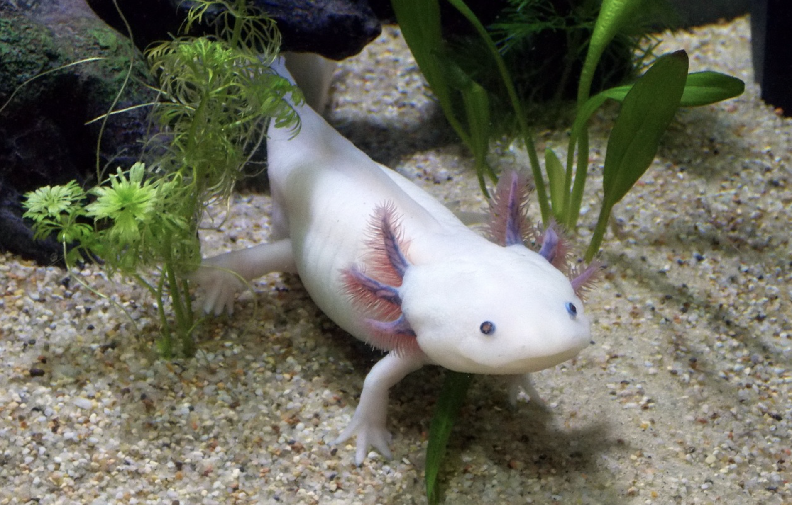
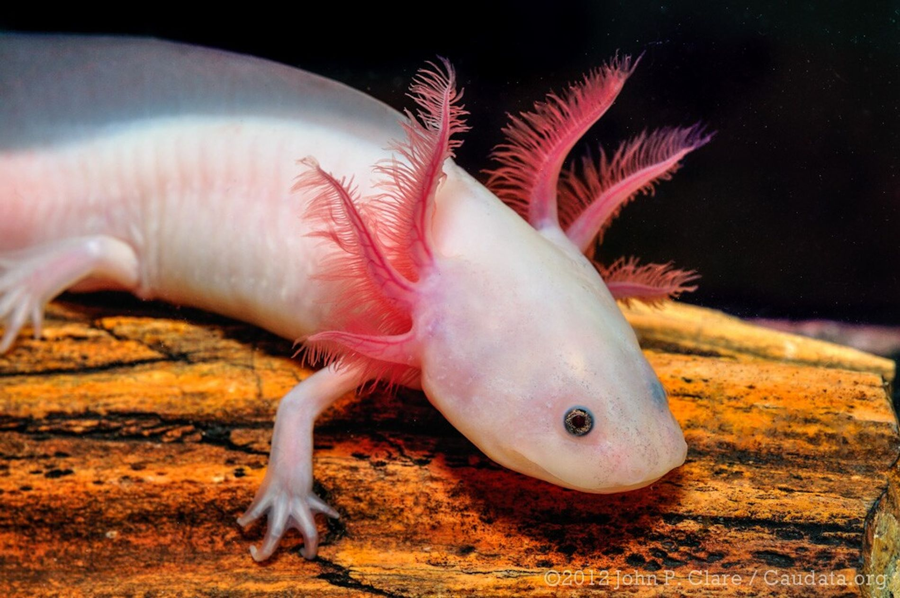
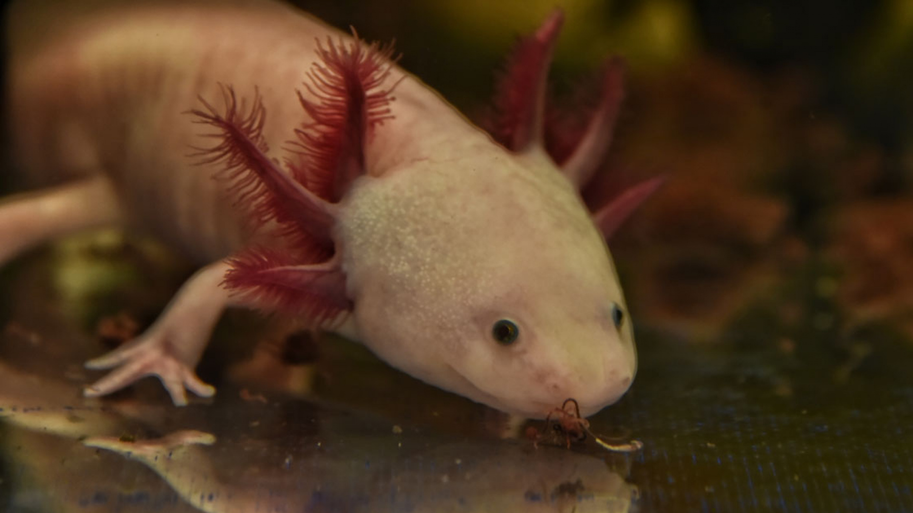

El ajolote mexicano (Ambystoma mexicanum) es un anfibio endémico de los lagos y canales de Xochimilco, en la Ciudad de México. Se caracteriza por sus branquias externas rosadas, su aspecto larvario permanente y su extraordinaria capacidad de regenerar extremidades y órganos. Actualmente está en peligro crítico de extinción debido a la contaminación del agua, la urbanización descontrolada y la introducción de especies invasoras como la tilapia y la carpa. Además de su importancia biológica, el ajolote tiene un profundo valor cultural, pues era considerado sagrado por los mexicas y hoy es símbolo de la biodiversidad mexicana.


